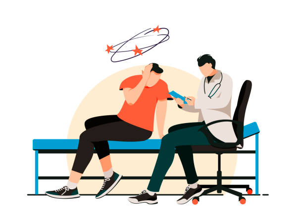

Vertigo and Balance Clinic in Thrissur
Is vertigo a disease?
No. Vertigo is a feeling caused by an underlying disease. We treat the disease, not just the feeling.
Are vertigo, dizziness and imbalance the same?
- Vertigo is a spinning sensation, of yourself or your surroundings.
- Dizziness or giddiness is a light-headed or floating feeling.
- Imbalance is difficulty sitting, standing or walking steadily.
- Changes in vision or blacking out are different complaints again.
What could be causing your vertigo?
- Vertigo with sudden head movements or turning in bed is likely to be benign paroxysmal positional vertigo (BPPV).
- Vertigo with hearing loss or ringing in one ear suggests an inner ear disease, such as Ménière's disease or labyrinthitis.
Go to the emergency department if vertigo is severe even when lying completely still, or comes with weakness, numbness, slurred speech, double vision or difficulty walking. These can be signs of a stroke.
What is the "ear balance" problem people talk about?
This usually means BPPV, the most common cause of vertigo.
How is BPPV treated?
BPPV is caused by tiny crystals moving inside the balance canals of the inner ear. There are three canals in each ear, six in total.
- To find the affected canal, the doctor moves your head in specific positions, for example from sitting to lying, or turning sideways. The Dix–Hallpike test is one such test.
- Once the canal is identified, the doctor moves your head in a sequence that guides the crystals out of the canal.
- When the crystals settle in a safe place, the spinning stops.
This is called a canalith repositioning manoeuvre. Examples include the Epley, Semont, barbecue roll and deep head-hanging manoeuvres.
How is imbalance treated?
- Treating the underlying cause
- Vestibular rehabilitation exercises, done in stages
Is surgery needed?
Rarely. Injections into the ear help in selected cases, and surgery is reserved for vertigo that does not respond to other treatment.
Do I need a scan?
- Most ear-related vertigo is diagnosed clinically with hearing tests, without a CT or MRI.
- MRI is preferred if a neurological cause is suspected.
- Videonystagmography (VNG) is useful in selected cases.
Book a consultation
Call 81390 05150 or message on WhatsApp. See clinics and timings.